W杯2026で活躍中の選手が登場!!ウスマン・デンベレのピックアップSP選手スカウトは引くべき？新SP選手4名を徹底評価

2026年6月23日更新のピックアップSP選手スカウトでは、ウスマン・デンベレ、ヤン・オブラク、ハカン・チャルハノール、カイル・ウォーカーの新SP選手4名が登場しました。
今回の注目は、W杯2026に出場している選手たちが中心になっている点と、Ver2.0で追加された金フォーメーションコンボ「ブラウ・グラーナ'15」に関係する選手が含まれている点です。
ただし、同時開催中のMLS実装記念SP選手スカウトや、7月7日前後の新ガチャ可能性もあるため、何も考えずに深追いするよりも、狙いを明確にして判断したいガチャです。
結論：デンベレで「ブラウ・グラーナ'15」を組みたい人向け。基本は様子見寄り
今回のガチャは、ウスマン・デンベレを狙うかどうかで評価が大きく変わります。デンベレはポゼッションCFの「ストライカーⅢ」として現状唯一無二で、金フォーメーションコンボ「ブラウ・グラーナ'15」の発動条件を満たせる重要なキー選手です。
一方で、純粋な戦力強化だけを考えるなら、6月30日までは同時開催中のMLS実装記念SP選手スカウトの優先度が高めです。特に期間限定かつ再入手不可のリオネル・メッシをまだ確保していない場合は、デンベレよりメッシを優先したい場面が多いです。
さらに今回の開催終了日は2026年7月7日12時59分まで。七夕タイミングで新ガチャが来る可能性や、日本代表2026関連のピックアップなども期待できるため、デンベレを狙う場合でも期限ギリギリまで情報を待つのがおすすめです。
ガシャの注目ポイント
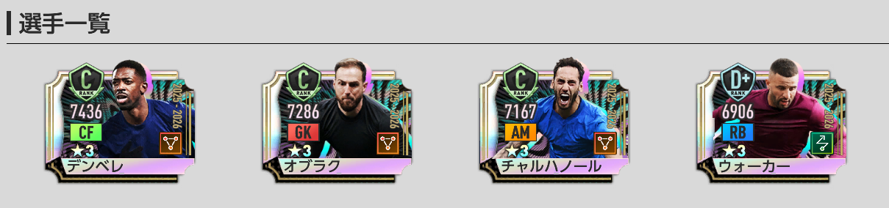
- ★3の排出率は5%。
- 排出される★3選手は、2026年5月15日までに登場した選手のみ。スコット・マクトミネイなども対象。
- RB1回限定★3確定10連はピックアップ確定ではなく、新SP4名を含む全60種の★3SP選手の排出確率が同じ。
- 新SP選手がピックアップ確率で引けるのは「通常」タブのGBで引けるガチャ。
- 開催期間終了後、次回以降のアップデートで恒常ガチャ「SP選手スカウト」に追加予定。
- 「ピックアップSP選手スカウトメダル」は、期間終了後に1枚につき「SP選手スカウトメダル」1枚へ変換される。
RB1回限定★3確定10連の注意点
RB1回限定の★3確定10連は、★3が1人確定する点では魅力的です。ただし、デンベレなどの新SP4名が確定するガチャではありません。
★3確定枠では新SP4名を含む全60種の★3SP選手が同じ確率で並ぶため、デンベレ1点狙いには向いていません。
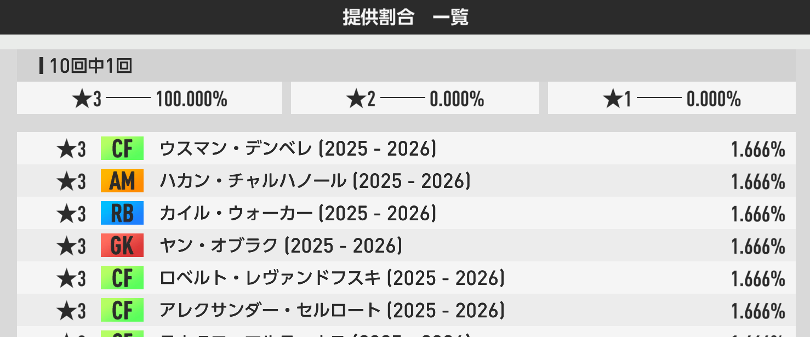
新SP選手をピックアップ確率で狙うなら、基本的には通常タブのGBガチャを確認してから引くのが安全です。RB確定枠は「とりあえず★3を増やしたい人向け」、通常GBは「新SPを狙いたい人向け」と考えると判断しやすいです。
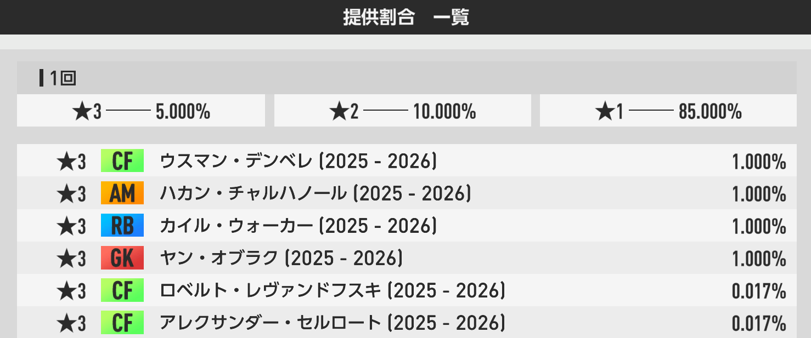
おすすめ度早見表
新SP選手4名の性能評価
ウスマン・デンベレ
基本性能
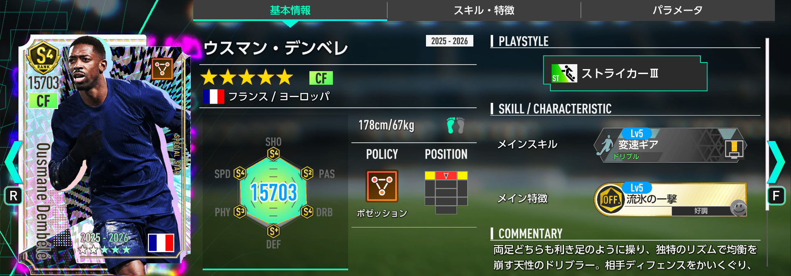
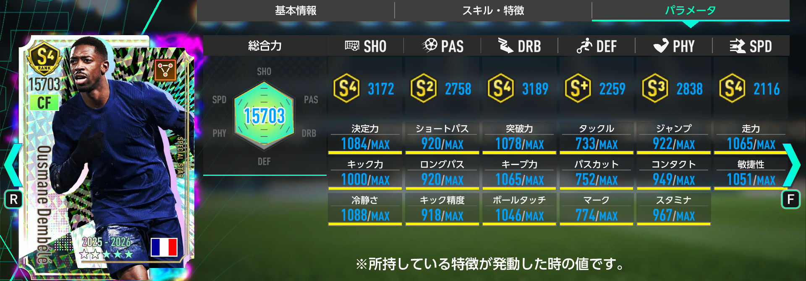
デンベレは、総合力が全SP選手375人中3位、ポゼッション94人中2位、CF73人中1位、ストライカー20人中1位。CFとしてもストライカーとしても、現環境のSP選手でトップに立てる性能です。
最大の強みは、ポゼッションCFのストライカーⅢという唯一性です。SP選手では現状唯一の組み合わせで、金フォーメーションコンボ「ブラウ・グラーナ'15」の発動条件「ストライカーⅢ」を満たせるキー選手として採用できます。
W杯2026のフランス代表として出場している点も、今回のガチャのテーマ性と合っています。サカつく内の性能だけでなく、リアルの大会連動感がある選手を確保したい人にも魅力があります。
スキル・特徴評価
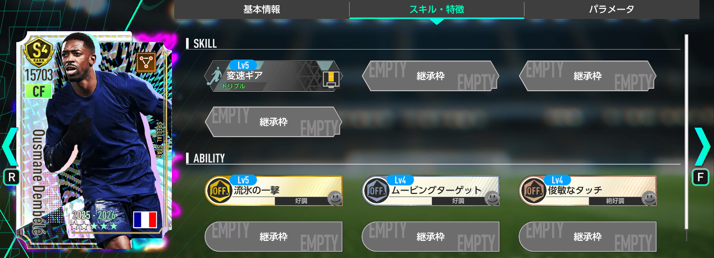
所持特徴は「好調トリガー2つ、絶好調トリガー1つ」と扱いやすく、スタメン起用でも安定して使いやすい構成です。高総合力、唯一性、金フォメコン適性、特徴構成のバランスが良く、今回の明確な当たり枠と言えます。
おすすめ度：
「ブラウ・グラーナ'15」を採用した最強チームを組みたいなら、デンベレは欠かせない存在です。ただし、同時開催のMLS実装記念SP選手スカウトでは期間限定かつ再入手不可のメッシが登場しているため、メッシ未所持なら優先順位には注意。デンベレ1点狙いになる人ほど、深追いは慎重に判断しましょう。
ヤン・オブラク
基本性能
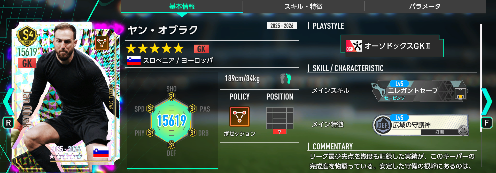
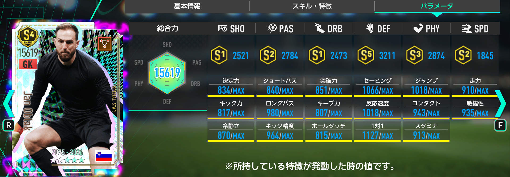
オブラクは、総合力が全SP選手375人中29位、ポゼッション94人中8位、GK34人中2位、オーソドックスGK31人中2位。GKとしての総合力は非常に高く、ポゼッションGKの中ではトップクラスです。
ポゼッションGKのオーソドックスGKは、恒常SPのマイク・メニャンなど全7名が存在します。その中でオブラクは総合力1位ですが、メニャンの限界突破が進んでいる場合は、無理に確保しなくても戦力的には代用可能です。
スキル・特徴評価
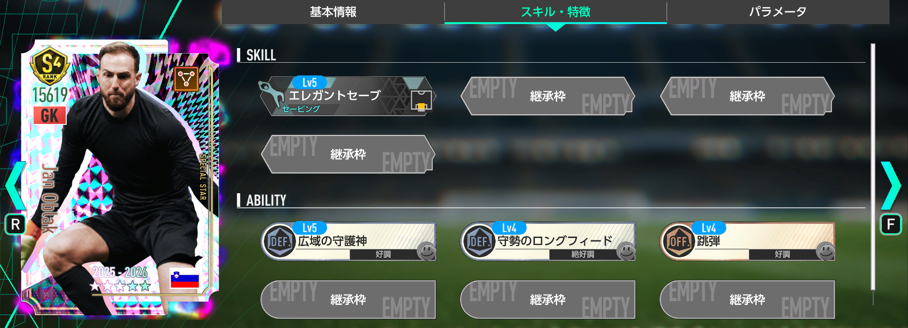
GKとして重要な「セービング・反応速度・1対1」は、マイク・メニャンよりも全て高く、単体性能では最強クラス。さらに特徴構成も「好調トリガー2つ、絶好調トリガー1つ」と扱いやすいです。
メニャンで代用できる？
総合力やGK主要パラメータではオブラクが優秀ですが、メニャンの限界突破が進んでいる人は確保優先度が下がります。スタメンをオブラク、交代枠をメニャンにする布陣は面白いものの、デンベレほどガチャを引く理由にはなりにくいです。
おすすめ度：
強いGKであることは間違いありません。ただし、マイク・メニャン、川島永嗣、東口順昭などの代用候補がいるため、率先して狙う必要は薄め。運よく当たったら最強GK候補として採用できる、という評価です。
ハカン・チャルハノール
基本性能
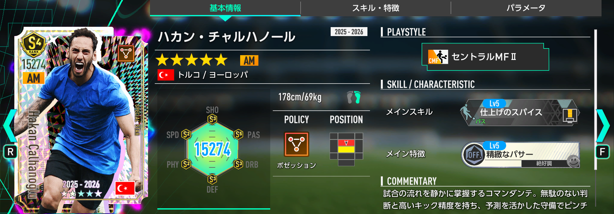
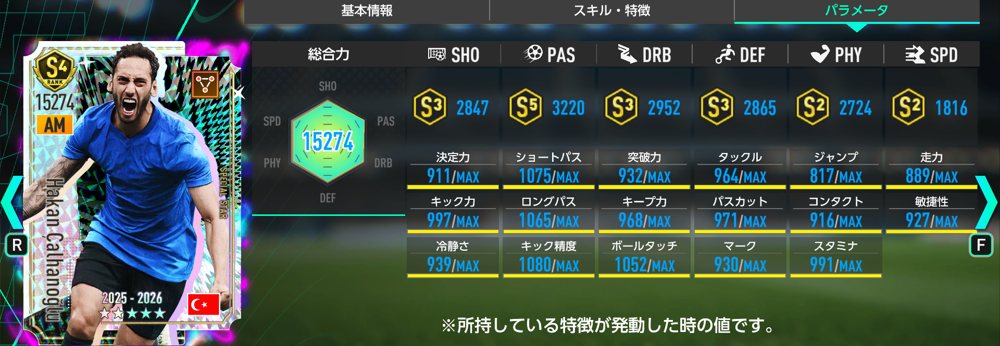
チャルハノールは、総合力が全SP選手375人中18位、ポゼッション94人中5位、AM46人中4位、セントラルMF27人中2位。ポゼッションAMのセントラルMFとしては非常に高い性能を持っています。
ポゼッションAMのセントラルMFは、恒常SPのイスコ、JリーグSPの西澤健太、KリーグSPのイ・ヒギュンに続いて4人目。その中でチャルハノールは総合力1位で、金フォーメーションコンボ「ブラウ・グラーナ'15」の発動条件「セントラルMFⅡ」を満たせるキー選手として採用できます。
W杯2026のトルコ代表として出場している点も含め、今回のガチャテーマに合う選手です。デンベレと同じく「ブラウ・グラーナ'15」を意識するなら評価が上がります。
スキル・特徴評価
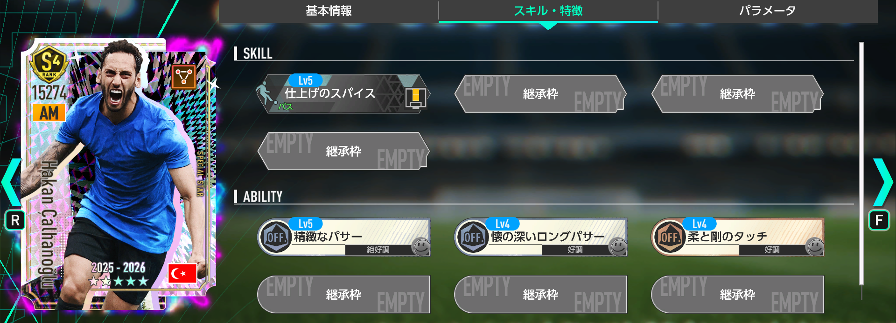
イスコの所持特徴が2つなのに対して、チャルハノールは特徴3つ。さらに「好調トリガー2つ、絶好調トリガー1つ」と扱いやすく、総合力だけでなく特徴面でもイスコの上位互換に近い立ち位置です。
イスコやMLSミュラーとの比較
イスコの限界突破が進んでいる場合、チャルハノールの獲得優先度は少し下がります。また、6月30日まで開催中のMLS実装記念SP選手スカウトでは、ポゼッションAM最強クラスのトーマス・ミュラーもピックアップされています。イスコや西澤を持っているなら、最強メッシを同時に狙えるMLS側を優先する判断も十分ありです。
おすすめ度：
単体性能は高く、「ブラウ・グラーナ'15」要員としても優秀です。ただし、デンベレほどの唯一性はなく、MLSミュラーという強力な競合もいるため、狙うかどうかは手持ち次第。ポゼッションAMが薄い人には十分おすすめできます。
カイル・ウォーカー
基本性能
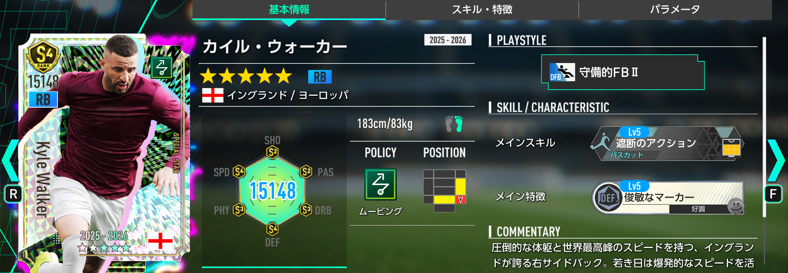
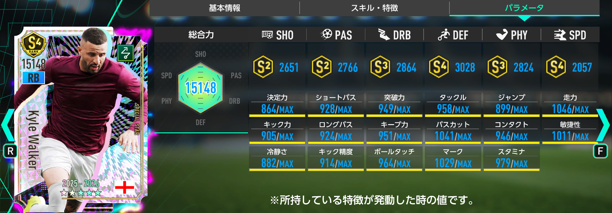
ウォーカーは、総合力が全SP選手375人中54位、ムービング87人中15位、RB21人中3位、守備的FB7人中1位。ムービングRBとしては、恒常SPのデンゼル・ダンフリースに次ぐ2人目の選択肢です。
プレイスタイル「守備的FBⅡ」では現状唯一無二ですが、現時点で発動条件を満たせる金フォーメーションコンボは実装されていません。つまり、今すぐ最強編成に入るというよりは、将来のフォメコン追加で評価が上がる可能性を持つ選手です。
スキル・特徴評価
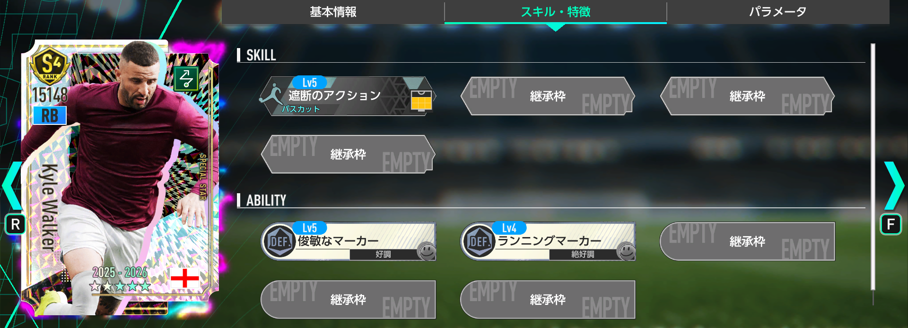
総合力ではダンフリースの下位互換であり、所持特徴もダンフリースが3つに対してウォーカーは2つ。現時点の即戦力評価では、やや物足りなさがあります。
将来性はある？
「RBの守備的FBⅡ」が発動トリガーになる金フォーメーションコンボが実装されれば、ウォーカーは一気に必須級へ評価が上がる可能性があります。今は研究枠・将来性枠ですが、プレイスタイル唯一性があるため、当たった場合に完全なハズレとは言い切れません。
おすすめ度：
現時点では優先して狙う選手ではありません。ムービングRBを強化したいだけならダンフリースで十分な場面も多く、ガチャの本命にはしにくいです。ただし、守備的FBⅡという唯一性があるため、将来の金フォメコン追加を見越して持っておく価値はあります。
今回のガチャは誰が引くべき？
引くべき人
- 金フォーメーションコンボ「ブラウ・グラーナ'15」を本気で組みたい人。
- ポゼッションCFの最強候補としてデンベレを確保したい人。
- チャルハノールも含めて、ポゼッション編成のキー選手を補強したい人。
- W杯2026出場選手を中心にチームを作りたい人。
- メッシを確保済みで、次の補強先としてポゼッションを強化したい人。
様子見でもいい人
- MLS実装記念SP選手スカウトのメッシをまだ確保していない人。
- デンベレ1点狙いになってしまう人。
- ポゼッションCFやAMの手持ちがすでに充実している人。
- 7月7日前後の新ガチャに備えてGBやRBを温存したい人。
- 恒常追加後にゆっくり狙えばいいと考えている人。
おすすめ度ランキング
- ウスマン・デンベレ：CF・ストライカーでトップ評価。ブラウ・グラーナ'15の最重要パーツ。
- ハカン・チャルハノール：ポゼッションAMのセントラルMFでは総合力1位。イスコ上位候補。
- ヤン・オブラク：GK単体性能は最強クラス。ただし代用候補が多く優先度は控えめ。
- カイル・ウォーカー：現時点では将来性枠。守備的FBⅡの金フォメコン追加に期待。
まとめ
今回のピックアップSP選手スカウトは、デンベレを狙う価値があるかどうかで判断するガチャです。デンベレはポゼッションCFのストライカーⅢとして現状唯一無二で、金フォーメーションコンボ「ブラウ・グラーナ'15」を組むなら非常に重要な選手です。
ただし、ガチャ全体で見ると、デンベレ以外の3名は手持ちや編成次第で評価が変わります。オブラクは強いものの代用候補が多く、チャルハノールは優秀ですがMLSミュラーとの比較が必要。ウォーカーは将来性こそあるものの、現時点では即戦力としての優先度は低めです。
さらに、同時開催中のMLS実装記念SP選手スカウト、7月7日前後の新ガチャ可能性、今後のワールドカップ関連ガチャまで考えると、今すぐ全力で引くよりも情報が出揃うまで待ってから判断するのが安全です。ブラウ・グラーナ'15を本気で組みたい人はデンベレ狙い、そうでない人は様子見寄りで良いガチャだと思います。
選手評価ツールも活用しよう
各選手のポジション別順位、ポリシー別順位、プレイスタイル別順位、対応フォーメーションコンボを詳しく確認したい場合は、サイト内の「選手評価ツール」もおすすめです。記事内の評価とあわせて、自分の手持ちや使いたいフォメコンに合うかチェックしてみてください。